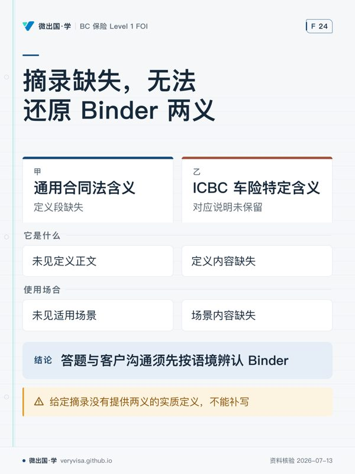

先用行业牌照与执业操守核对结论。本章聚焦从客户需求发现、核保出单到理赔全流程的参与方职责、执业操守及法律权限边界。
一、温习目标与业务全景
本章考察一般保险（General Insurance）业务从前端销售到后端理赔的完整操作链条，重点掌握： 1. 全业务流程五大阶段：需求发现与风险识别（Fact-Finding）→ 投保申请与核保评估（Underwriting）→ 报价与临时承保（Quotation & Binding）→ 保单出具与日常服务（Policy Service & Endorsement）→ 出险报案与理赔协助（Claims Service）。 2. 参与主体职权与信义义务（Fiduciary Duty）：明确保险人（Insurer）、经纪人（Broker）、代理人（Agent）、核保人（Underwriter）与公估人（Adjuster）在法律上的代表关系与权限边界。 3. 中介人牌照层级与 Level 1 四条硬性限制：依据卑诗省保险理事会持牌人规则（Council Rules, RULE 6），熟记 Level 1 Salesperson 的执业法定红线。 4. 职业过失责任险（E&O）防范：深刻理解“未留存文字记录等于没做”、客户知情拒绝（Informed Refusal）的法律意义及高频暴露点。
| 参与角色 | 法律代表关系与核心权限 | 关键执业红线 |
|---|---|---|
| Insurer 保险人 | 承担保险合同给付义务的法人主体；拥有最终承保与理赔决策权。 | 负有公平对待客户（Fair Treatment of Customers）与偿付能力法定义务。 |
| Independent Broker | 代表客户（Client/Insured）寻找最佳保障；在授权内代表保险人暂保。 | 不得超越代办协议约定的 Binding Authority 范围；严禁挪用保费信托资金。 |
| Agent 代理人 | 代表指定保险人（Insurer）；向客户推介该特定保险公司的产品。 | 必须如实向保险公司转交投保重大事实，不得擅自修改核保准则。 |
| Underwriter 核保人 | 保险公司内部专业技术人员；负责风险筛选、分类、定价与附加条件。 | 依据核保手册与风险暴露决策，平衡业务规模与公司偿付能力安全。 |
| Adjuster 公估人 | 调查损失成因、确定责任归属、核算损失金额并协助完成理赔。 | 独立公估人必须在受委托的权限范围内行动，不得擅自做出超出保单的无权承诺。 |
二、底层机制：全流程运转与参与主体职责
1. 业务全流程五步闭环
- 第一步：客户风险发现与需求分析（Needs Analysis） 中介人必须主动、全面询问客户的有形资产、经营活动、责任暴露及既往损失历史，识别客户面临的潜在纯粹风险，而非机械地让客户“自己选要买什么”。
- 第二步：投保单填写与核保评估（Application & Underwriting） 投保单是保险合同的要约载体。核保人根据投保单信息、第三方信用及理赔记录库（如 Autoplan 驾驶记录或财产损失数据库 CGIA）、专业检验师现场勘查报告（Inspection Report），决定接受风险、有条件接受（如加收保费、提高免赔额或附加除外责任）或彻底拒保。
- 第三步：报价与临时承保（Quotation & Binding）
- 报价（Quotation）只是向客户呈现承保方案与费率条件，不等于合同已经成立。
- 临时承保权（Binding Authority）：经纪人在保险公司预先书面授权的额度与险种范围内，向客户出具临时承保单（Binder），使保障立即生效。临时保单在正式保单签发前具有完全的法律约束力。
- 第四步：正式保单签发与批单变更（Policy Delivery & Endorsement） 正式保单送达被保险人后，中介人负有核对保单声明页（Declarations Page）与客户指示是否完全一致的谨慎注意义务。保期内若发生搬迁、添置重大设备、产权变更等，需及时出具批单（Endorsements）更新记录。
- 第五步：理赔报案与协助（Claims Notification） 损失发生后，中介人指导被保险人采取紧急减损措施，立即向保险人出险报案，协助填写损失证明（Proof of Loss），并在保险人与独立公估人之间发挥沟通桥梁作用。
2. 经纪人的法律地位与信义义务
- 双重身份下的利益冲突防范：独立经纪人在为客户寻找市场、量身设计方案时，是客户的代理人；但在收取保费、出具临时承保单（Binder）时，又依代理协议行使保险人的授权。当出现利益冲突时，经纪人负有披露冲突并以客户最大利益为先的信义义务（Fiduciary Duty）。
- 保费信托账户管理（Trust Account）：客户缴纳的保费属于信托资金（Trust Funds），经纪行必须依法将其存入专用的保费信托账户，严禁将保费与经纪行的日常运营资金混同，更严禁挪用保费用于支付经纪行租金、工资等营运开销。
3. 职业过失责任险（E&O）防范核心
E&O（Errors and Omissions）诉讼通常由于经纪人疏忽、遗漏或错误建议引起。高发场景包括： - 未向客户充分解释重大除外责任（如洪水或下水道倒灌除外）； - 替客户勾选“不需要额外水损险”，事后无法提供客户签署的知情拒绝书（Informed Refusal）； - 承诺了已经生效，但实际遗忘向保险公司出具 Binder 或录入系统； - 保额建议严重低于实际重置价值，导致出险时触发共同保险惩罚（Coinsurance Penalty）。 专业纪律铁律：没有书面记录的口头沟通，在法律举证上等于从未发生。
三、实务口径与 2026 易错边界（R16 考试 vs 实务分流）
在准备考试与实务展业中，必须掌握以下重要规则界限与法律分流：
1. Level 1 销售员执业范围与四条红线（Council Rules RULE 6）
根据卑诗省保险理事会规定，获得 Level 1 General Insurance Salesperson 牌照的新入行持牌人，享有合法的销售与咨询权利，但受到以下四条严格的法定限制（RULE 6）： - 红线一：必须在持牌经纪行办公室内执业（Inside the Office）。Level 1 销售员不得在经纪行登记的常设营业场所之外独立设点或脱离办公室流动展业； - 红线二：不得具有管理或监督职责（No Management/Supervision）。不得担任经纪行的经营合伙人、高级主管，不得指导或监督其他持牌人； - 红线三：不得持有经纪行股权或重大利益。不能作为一般保险经纪行的股东、出资人或实际控制人； - 红线四：必须在合格高级持牌人监督下开展业务（Direct Supervision）。所有保单申请、方案制定与临时承保，必须在指定的 Level 2（Agent/Broker）或 Level 3（Nominee/Manager）专业人员的直接监督、审查与指导下进行。
2. BC Level 1 合格学历路径的并列事实
- 考试口径：很多复习资料将通过 IBAC 的 FOI 考试描述为卑诗省 Level 1 的唯一步骤。
- 实务口径与现行法：卑诗省保险理事会规章明列，申请 Level 1 牌照的专业学历要求有四条平行认可通道：
- 通过 IBAC 的 FOI 考试；
- 通过加拿大保险经纪协会的 CAIB 1 考试；
- 通过加拿大保险学会（IIC）的通用保险基础课程（如 C11 原理课程）；
- 拥有理事会认可的大学商科、风险管理专业学位或对等资历认证。考生在答卷与规划职业时应知悉四条通道的法定并列性。
3. MGA 概念的“一词两义”与跨板块防腐
- 在财产与意外险（P&C 商业险）实操中，管理总代理（Managing General Agent, MGA）的核心法律特征是：从一家或多家保险公司获得大额承保授权，行使原本属于保险公司的核心职能——直接核保、费率制定、签发保单以及管理下级经纪人网络。
- 但必须警惕：在卑诗省人寿保险（Life Insurance）监管体系下，理事会明文发布监管通告（ICN #12-001），明令严禁人寿保险公司将承保决策、适合度核保权外包给人寿 MGA。在复习 P&C 考试时，切勿将两者的监管法理混淆。
4. 隐私保护法 PIPA 与 PIPEDA 的适用界限
- 客户档案管理中必须遵循隐私法规。常见的错误认知是“因为有联邦 PIPEDA，卑诗省就不管”，或反过来认为“卑诗省完全排斥 PIPEDA”。
- 实务准则：依活动范围划分。在卑诗省内从事普通个人与商业财产保险销售的私营经纪行，受省属《个人信息保护法》（PIPA, SBC 2003 c.63）全面监管；只有涉及跨省业务传输、或者业务对象为联邦管辖企业（如银行、跨省铁路、航空公司）时，才触发联邦《个人信息保护与电子文档法》（PIPEDA）。
5. Binder 术语在同一套考试口径里的双重含义
- 通用合同法含义：在普通财产责任险中，Binder 是指在正式保单签发前、赋予被保险人即刻保障的临时保险合同；
- ICBC 车险特定含义：在卑诗省汽车保险实务中，Binder 是指特定表格 APV38（Interim Insurance Binder），专用于在车辆从省外运入、临时过境或未上牌期间提供的临时营运保险凭证。答题与跟客户沟通时须根据语境精准识别。
6. 无牌保险人（Unlicensed Insurer）通道的主体限制
- 《卑诗省金融机构法》（FIA s.76(1)(c)）允许在本土持牌市场无法承保的高难特殊风险向非本省持牌保险人投保，但该法定通道的主语是 Agent（一般代理人/具备高级全牌资质者），绝对不是 Level 1 Salesperson。Level 1 销售员个人无权独立经手该通道，更不得向客户擅自推介境外无牌公司。
四、开放式场景闭卷自测
请根据保险业务流程、专业操守与法定权限，独立完成以下 5 道场景案例题：
-
临时承保权（Binding Authority）与生效确认： 周五下午 4:55，客户致电经纪行：“我刚买下了一栋商业仓库，价格 100 万加元，下周一交割，请立即帮我买好保单。”经纪人小李迅速记录了仓库地址和基本结构，并在电话里向客户拍胸脯保证：“没问题，放心吧，我已经把这笔业务录入意向备忘录了，你的保障现在就已经绝对生效（Binding）了！”周末期间仓库发生突发火灾。调查发现，经纪行与保险公司签署的代理协议中，单栋建筑的最高临时暂保权限（Binding Limit）为 50 万加元，且该类木材加工类仓库属于协议明确约定的“需预先向保险公司报批的非自动暂保名单（Referral List）”。请从法律效力、E&O 责任及权限越权角度深度剖析小李的过失。
-
知情拒绝（Informed Refusal）与 E&O 防御： 经纪人小王为一处位于低洼易积水住宅区的房主办理房屋保单续保。在推荐水损附加险时，小王口头提醒客户：“加保下水道倒灌（Sewer Backup）附加险每年大概需要多花 250 加元。”客户在电话中随口回复：“太贵了，先不要了吧。”小王便在系统里去掉了该选项并顺利扣取了基础保费，但未发送任何确认邮件，更未要求客户签署任何免责确认文件。次年春季该房屋遭遇重大污水倒灌，地下室装修损失 8 万加元。客户愤怒投诉并向法院起诉经纪行赔偿，声称经纪人从未向其清晰解释过该风险且自己从未拒绝过此项保障。请分析经纪行在此次民事索赔中的法律抗辩难度及应有的规范操作流程。
-
Level 1 销售员展业边界合规审查： 持有卑诗省 Level 1 牌照的销售员小张为了拓展客源，与一家大型汽车展厅达成合作：小张每周六、日携带个人笔记本电脑，独立前往该汽车展厅设立的“VIP 客户金融保险服务专柜”现场驻点办公，独立向购车客户解释商业车险产品、完成保单报价并独立签署临时保单凭单。请依据卑诗省保险理事会持牌人规则（Council Rules RULE 6），逐条列出小张行为中的严重违规点，并说明其面临的监管处罚后果。
-
保费信托资金归集与财务纪律： 某小型独立经纪行近期因扩大办公面积产生大笔装修工程款缺口，面临施工方起诉风险。经纪行合伙人发现，月初刚刚集中收取了大量客户缴纳的半年期商业保单保费现金共计 15 万加元，而与各大保险公司的结算账期在下个月底。该合伙人决定先从“保费账户”划转 10 万加元垫付装修款，并计划在下月用新的佣金收入补齐窟窿。请从保险信托法律性质、信义义务及卑诗省监管规则角度，严正评判该合伙人的行为性质及严重法律后果。
-
无牌保险人通道与管辖法规： 一家从事前沿深海勘探的本地高科技公司需要为其特种水下机器人投保 500 万加元的一揽子财产与作业责任险。全卑诗省所有持牌的商业保险公司均以“风险过于特异、缺乏历史损失精算数据”为由出具了正式拒保信。该高科技公司找到 Level 1 销售员小陈寻求帮助。小陈在网上联系到一家位于百慕大的特种离岸保险人并准备直接为该客户签单。请依据《卑诗省金融机构法》（FIA s.76）及理事会规章，说明处理此类业务的合法规范流程及小陈应有的执业边界。
五、参考答案与判分基准
1. 案例一判分基准（满分 10 分）
- 越权承保行为的法律效力：小李的越权暂保属于典型的表见代理或无权代理行为。对善意第三人（客户），因经纪人具备外在代理授权表象，保险公司可能在法律上被判决先行承担给付责任；但保险公司对经纪行享有完全的代位追偿权（Subrogation/Recovery）。（3分）
- 超越 Binding Authority 限制：小李严重违反代理协议中的双重红线——既突破了 50 万限额（保额 100 万），又承保了需要预先上报的 Referral List 高危标的，在业务中犯下根本性过失。（3分）
- 重大 E&O 责任成立：小李口头虚假承诺保障立即生效，但未履行向保险公司的及时书面呈报，导致经纪行直接面临由保险公司发起的重大巨额违约追偿与客户诉讼，小李个人将面临吊销执照与职业纪律调查。（4分）
2. 案例二判分基准（满分 10 分）
- 经纪行败诉风险极高：法律推定经纪人具有专业顾问义务。在缺乏书面证据的情形下，法庭采信客户“不知情或未被充分解释”的主张，经纪行很难单凭经纪人口头陈述推翻客户指控。（3分）
- 未履行知情告知义务：专业经纪人不仅要报价格，更必须解释不买该附加险的后果（如普通保单绝对除外地下室倒灌），使客户在充分理解风险与代价的基础上做出决策。（3分）
- 规范的防御性操作流程：
- 必须在系统档案中详实记录沟通时间、推荐理由及保费差距；
- 必须以书面邮件向客户重申拒绝该险种的决定与后果；
- 必须要求客户签署正式的知情拒绝书（Informed Refusal Form / Waiver）存档备查。（4分）
3. 案例三判分基准（满分 10 分）
- 违反红线一（场外展业）：依据 Council Rules RULE 6，Level 1 销售员必须在注册经纪行的物理办公室内执业，擅自脱离办公室驻点车展大厅展业属于严重越界违规。（3分）
- 违反红线四（脱离直接监督）：Level 1 展业必须在 Level 2 或 Level 3 持牌人直接监督下进行。小张一人在外独立完成讲解、报价与出单，完全处于脱管状态。（3分）
- 签署与出具临时保单违规：Level 1 无权独立最终签署出具复杂的商业承保单，必须由主管人员审核签字。（2分）
- 面临的监管后果：卑诗省保险理事会将启动合规纪律调查，小张及所属经纪行主管（Nominee）将同时面临公开谴责、巨额监管罚款（Fines）、限制牌照条件直至吊销牌照处分。（2分）
4. 案例四判分基准（满分 10 分）
- 行为性质定性：挪用保费信托资金（Breach of Trust / Misappropriation）。保费在法律上属于保险公司的法定财产并由经纪行代为信托保管，绝非经纪行的流动资产或备用金。（3分）
- 违反最高信义义务（Fiduciary Duty）：擅自挪用信托账户资金弥补商业装修工程缺口，无论主观意图是否归还，在法律上即刻构成违约与侵占。（3分）
- 监管与刑法双重后果：
- 理事会层面：直接触犯理事会财务监管底线规则，经纪行将被暂停执业或吊销机构牌照，主要合伙人将被终身禁止从业；
- 司法层面：涉嫌违反《刑法典》（Criminal Code of Canada）关于背信侵占信托资产的犯罪指控。（4分）
5. 案例五判分基准（满分 10 分）
- 小陈个人执业红线：指出依据《卑诗省金融机构法》（FIA s.76(1)(c)），无牌保险人通道的法定操作主体必须是具备资质的 Agent（全牌代理人/经纪人），Level 1 销售员绝对无权独立操作，小陈必须立即向经纪行的 Level 3 业务主管汇报并由高级持牌人接管。（3分）
- 法定前置要件：无法在持牌市场获得保障：该特种深海装备必须先由持牌中介人向本土多家持牌保险公司正式询价并取得充分的正式拒保信（Declination Letters），证明本地市场无法承保。（3分）
- 法定报批与纳税流程：
- 必须在高级主管主持下，由客户签署书面声明知悉该保险人未经 BC 本土牌照核准、不享受 PACICC 破产保障；
- 必须按照《金融机构法》向监管机构（BCFSA）呈交无牌保险报备申请；
- 必须依法代扣并向省政府税务部门足额申报并缴纳卑诗省适用的保费特许税（Insurance Premium Tax）。（4分）
六、错题复盘与追问清单
完成本章自测后，对照下表检查专业操作漏洞：
| 高频易错点 | 典型认识误区 | 规范执业尺度 | 复盘自查追问 |
|---|---|---|---|
| Level 1 权限 | 以为只要考过了牌照，就可以在任何场所自由签单。 | 牢记 RULE 6 四条红线：办公室内、接受监督、无管理权、不持股。 | “该销售人员是否在持牌经纪行办公室内执业？是否有主管直接审核？” |
| E&O 举证责任 | 认为只要跟客户口头沟通过，法庭就会相信经纪人。 | 口头无凭，知情拒绝必须留存文字确认书面痕迹。 | “我是否有客户签署的书面拒绝凭证？档案记录能否在法庭上经受质证？” |
| MGA 双重定义 | 把商业险 MGA 的承保权力生搬硬套到人寿保险体系。 | P&C MGA 拥有直接承保出单权；人寿保险 MGA 严禁外包承保决策。 | “当前讨论的是非寿险财产险业务，还是人寿保险分销体系？” |
| 隐私法管辖权 | 动辄套用联邦 PIPEDA，忽略卑诗省本省专门立法。 | 卑诗省私营工商业与中介机构首要遵守省属 PIPA（SBC 2003 c.63）。 | “该业务是省内一般商业买卖，还是跨省/联邦规管机构活动？” |
本页知识卡
不看正文也能拿到这一节的核心内容：先看导读，再看图。点图放大，左右翻页。
- 先看先区分已知信息和缺失信息。
- 易漏别把断裂文本补成猜测。
- 下一步补齐原段后再替换占位项。

- 先看先看两栏是否都有可靠依据。
- 易漏本段的问题不是难记，而是信息断裂。
- 下一步补齐对应摘录后再做正式对照。